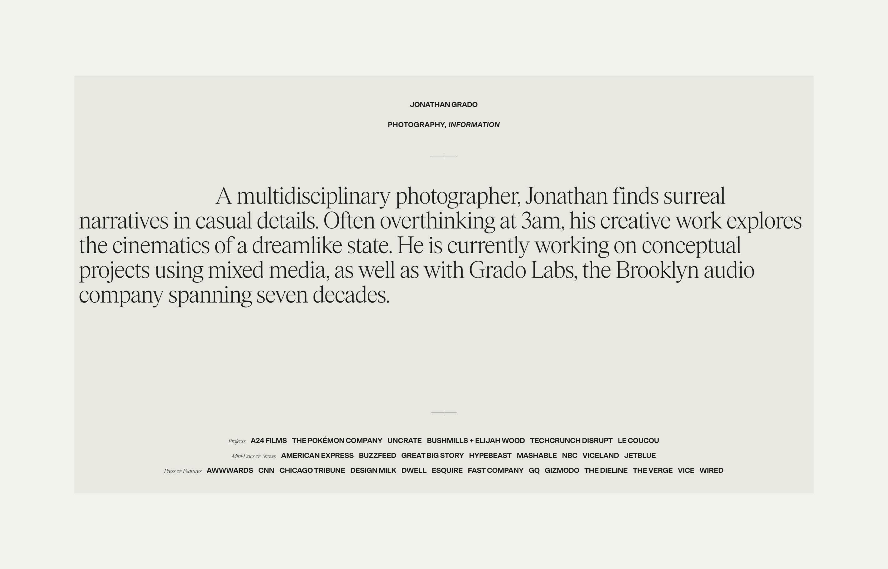
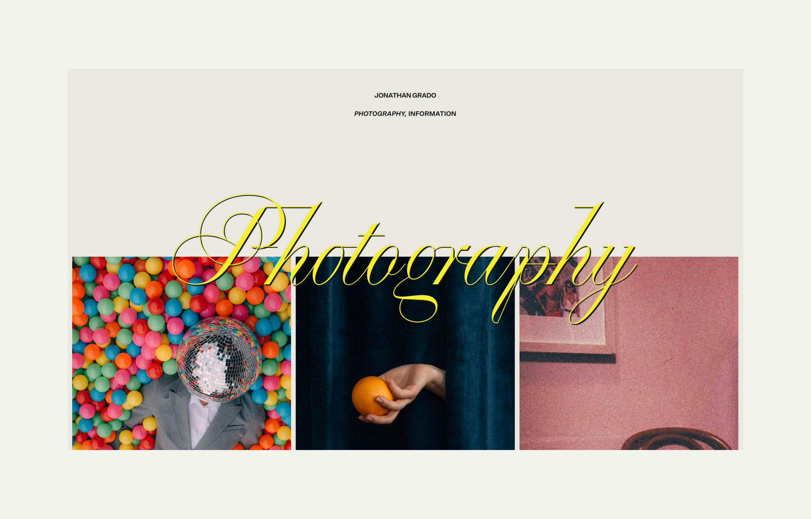
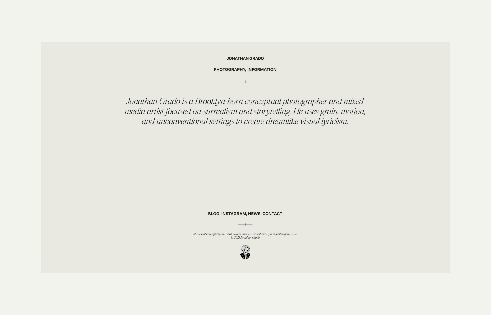
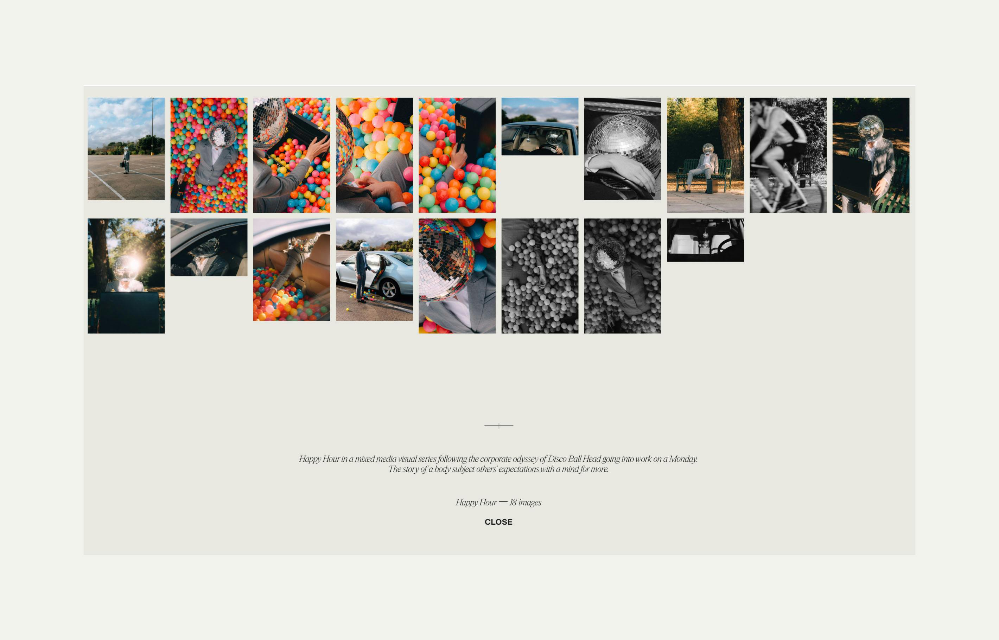

The Jonathan Grado website brings to life the creative journey of Jonathan Grado, the third-generation leader of Brooklyn’s renowned Grado Labs. Born and raised in Brooklyn, Jonathan has blended his family’s legacy in audio innovation with his passion for multidisciplinary photography. The site features a cinematic design that mirrors Jonathan’s artistic vision, showcasing his work with brands like Pokémon and A24 Films, as well as his appearances in commercials for American Express and segments on NBC, CNN, and Vice. Designed for flexibility, the website uses a modular layout. Smooth transitions and immersive visuals guide users through Jonathan’s portfolio, highlighting his attention to detail and creative storytelling.
Year 2024 Agency Concrete Club Design Concrete Club Stack Webflow Gsap Barba.js Live Website
   